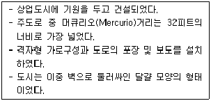
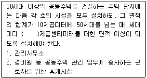
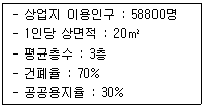
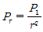
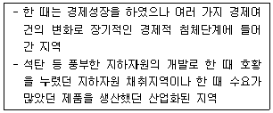
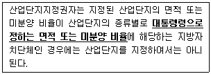
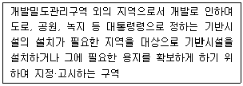

도시계획기사 (2020-09-26 기출문제)
1과목: 도시계획론
1. 고대 그리스 도시의 특징으로 틀린 것은?
- 도시 입구와 신전을 축으로 중간지점에 아고라를 배치하였다.
- 주로 자연항을 사용하였으나 필요한 경우 제방을 쌓아 인공항만을 건설하였다.
- 본토의 해안지역에서 자연적으로 발생한 도시는 질서 있는 격자형의 도로망을 갖추었다.
- 페르시아와의 전쟁 후 복구 과정에서 격자형 가로망 체계가 일부 본토의 도시에서 채택되었다.
(정답률: 80%)

2. 케빈 런치가 제시한 도시경관이미지의 구성요소가 아닌 것은?
- Landmark
- Edge
- District
- Zone
(정답률: 86%)
3. 지리정보시스템(GIS)에 대한 설명으로 틀린 것은?
- GIS의 자료는 도형자료(graphic data)와 속성자료(attribute data)로 구분할 수 있다.
- GIS를 도시계획분야에 적용하고자 하였으나, 관련 자료의 취득이 어려워 현재 시스템 적용이 어렵다.
- GIS는 지리적 공간 상에서 실세계의 각종 객체들의 위치와 관련된 속성정보를 다루는 것이다.
- GIS의 공간자료는 토지 측량, 항공 및 위성사진 측량, 범세계 위치결정체계(GPS)를 사용하여 수집할 수 있다.
(정답률: 90%)
4. 친환경적인 도시개발과 사회적 비용을 최소화하기 위해 토지이용 집적을 통해 토지의 이용 가치를 높이기 위한 도시개발을 강조하는 도시는?
- 유시티(U-City)
- 에코시티(Eco-City)
- 스마트시티(Smart City)
- 컴팩트시티(Compact City)
(정답률: 80%)
5. 다음 중 도시공원의 구분에 따른 분류가 다른 하나는?
- 어린이공원
- 문화공원
- 수변공원
- 체육공원
(정답률: 79%)
6. 1980년대 계획된 우리나라의 제1기 신도시와 비교하여 2000년대에 추진된 제2기 신도시 계획이 갖는 특징이 아닌 것은?
- 대중교통지향적인 교통체계를 갖추었다.
- 녹지율을 높여 그린네트워크를 지향하였다.
- 친환경, 첨단과 같은 신도시로서의 테마를 강조하였다.
- 제1기 신도시에 비해 도시이용에 있어 고밀도를 유지하였다.
(정답률: 81%)
7. 우리나라에서 도시기본계획을 도입하게 된 배경으로 보기 어려운 것은?
- 주민참여의 구체적 실현
- 개발수요에 대한 합리적 대응
- 도시관리계획의 잦은 변경 방지
- 합리적이고 과학적인 도시계획 수립
(정답률: 71%)
8. 텔레커뮤니케이션(tele-communication)을 위한 기반시설이 인간의 신경망처럼 도시 구석구석까지 연결된 도시이며, 다양한 도시 부분에 ICT의 첨단 인프라가 적용된 지능형 도시는?
- Eco-City
- Green-City
- Smart City
- Compact City
(정답률: 91%)
9. 지역의 산업성장을 국가전체의 성장요인, 산업 구조적 요인, 지역의 경쟁력 요인으로 구분하여 지역경제를 분석하고 예측하는 기법은?
- 경제기반모형
- 투입산출분석
- 변이할당분석
- 비용편익분석
(정답률: 47%)
10. 토지이용계획과 지역지구제(zoning system)에 대한 설명으로 가장 거리가 먼 것은?
- 지역지구제를 통해 해당 지역의 계획 및 개발사업에 필요한 비용을 충당할 수 있다.
- 지역지구제는 토지이용계획의 실현수단이다.
- 우리나라의 지역지구제는 지역, 지구, 구역으로 구분된다.
- 토지의 용도와 기능을 계획지침에 부합되도록 유도하는 제도적 장치이다.
(정답률: 70%)
11. 뉴어바니즘(New Urbanism)의 기본 개념으로 틀린 것은?
- 다양한 주거양식의 혼합
- 디자인코드(Design Code)에 의한 건축물
- 도시공간의 위계 파괴를 통한 자유스러운 토지이용 유도
- 근린주구 구성기법에 근거한 걷고 싶은 보행환경체계 구축
(정답률: 83%)
12. 가도시화(Pseudo-urbanization)에 대한 설명이 옳은 것은?
- 개발도상국가들 보다는 인구의 정체가 일어나는 국가나 지역에서 발생하는 현상이다.
- 도시의 부양능력에 비해 많은 인구가 유입 되면서 인구적으로 비대해진 현상이다.
- 도심의 공동화로 인해 슬럼화되는 현상을 해결하기 위해서 도심을 재생하여 활성화를 도모하는 현상이다.
- 대도시에서 비도시지역으로 인구가 전출되면서 대도시의 상주인구가 급격하게 감소하는 현상이다.
(정답률: 84%)
13. 계획이론 중 정치 경제 계획 모형의 이론적 입장에서 합리적 계획모형에 대하여 제기하는 비판으로 가장 거리가 먼 것은?
- 지나치게 장기적인 사회구조적 해결책만을 강조하여 부분적이고 단기적인 개선에는 소홀하다.
- 합리성의 지나친 강조로 현실성이 결여 되었다.
- 계획의 실행에 있어서의 목적과 계획이 실행되는 사회구조적 특성을 무시함으로써 계획을 현실에 응용하는데 괴리가 있다.
- 계획의 목표와 내용보다는 계획안을 만들어 내는 계획수립과정을 지나치게 강조하였다.
(정답률: 50%)
14. 개발로 인하여 기반시설이 부족할 것으로 예상되나 기반시설을 설치하기 곤란한 지역을 대상으로 건폐율이나 용적률을 강화하여 적용하기 위해 지정하는 구역은?
- 개발밀도관리구역
- 기반시설부담구역
- 시가화조정구역
- 성장억제구역
(정답률: 76%)
15. 지역 내의 조망대상을 한 눈에 조망할 수 있고 시계의 범위가 넓으며 파노라마적인 경관을 감상할 수 있는 경관유형은?
- 부감경
- 양감경
- 수평경
- 입체경
(정답률: 62%)
16. 도시·군기본 계획에 대한 설명이 틀린 것은?
- 도시·군관리계획의 상위계획적 성격을 갖는다.
- 5년마다 타당성을 전반적으로 재검토하여 정비하여야 한다.
- 인구·산업·재정 등 사회·경제적 측면을 포괄하는 종합계획의 성격을 갖는다.
- 수립기준은 대통령령으로 정하는 바에 따라 특별시장, 광역시장, 특별자치시장, 특별자치도지사, 시장 또는 군수가 정한다.
(정답률: 61%)
17. 해리스와 울만이 제시한 다핵심구조이론에서의 기능지역에 해당하지 않는 것은?
- 도시교통시설지역
- CBD
- 중공업지역
- 교외주거지역
(정답률: 72%)
18. 다음의 설명에 해당하는 도시는?

- 폼페이
- 아오스타
- 카스트라
- 팀가드
(정답률: 81%)
19. 도시인구예측모형에 대한 설명이 옳은 것은?
- 도시인구예측모형은 인구변화의 규칙성을 수식으로 나타낸다.
- 요소모형에서 인구변화는 출생, 사망이라는 두 가지 요소로 이루어져 있다.
- 요소모형은 비요소모형보다 도시인구 예측모형으로 활용성이 높다.
- 대개의 도시인구예측은 요소모형에 주로 의존한다.
(정답률: 44%)
20. 집산도로의 기능에 대한 설명으로 옳은 것은?
- 가구를 구획하고 택지로의 접근성을 높이는 것을 목적으로 한다.
- 근린주거구역의 교통을 보조간선도로에 연결하여 근린주거구역 내 교통이 모였다 흩어지도록 한다.
- 시·군내 주요 지역을 연결하거나, 시·군의 골격을 형성한다.
- 대량 통과교통의 처리를 목적으로 하여 도시 내의 골격을 형성한다.
(정답률: 74%)
2과목: 도시설계 및 단지계획
21. 경관창조를 위한 공동주택 주거동의 바람직한 배치에 대한 설명으로 가장 거리가 먼 것은?
- 스카이라인에 율동감을 준다.
- 기존 지형에 과다한 절·성토를 피한다.
- 주거동의 고층화를 억제하며, 중·고밀도로 자연에 순응하는 군집형태로 건물을 배치한다.
- 연립 및 중·고층아파트의 배치는 주보행로를 중심으로 접지성이 약한 순서인 고층, 중층, 저층의 건축물을 차례로 배치한다.
(정답률: 74%)
22. 지구단위계획 수립의 일반원칙에 대한 내용으로 틀린 것은?
- 입안권자는 지구단위계획을 작성하는 때에 도시·군계획, 건축, 경관, 토목, 조경, 교통 등 필요한 분야의 전문가의 협력을 받을 수 있다.
- 쾌적하고 편리한 환경이 조성되도록 지역 현황 및 성장 잠재력을 고려하여 적절한 개발 밀도가 유지되도록 하는 등 환경 친화적으로 계획을 수립하여야 한다.
- 도로, 상·하수도, 전기공급설비 등 기반시설의 처리·공급 수용능력과 건축물의 연면적이 적정한 조화를 이루도록 하여 기반시설 용량이 부족하지 아니하도록 한다.
- 정비구역 및 택지개발지구에서 시행되는 사업이 완료된 후 5년이 경과한 지역에 수립하는 지구단위계획은 기존의 기반시설 및 주변 환경에 적합하고 과도한 재건축이 되지 않도록 하여야 한다.
(정답률: 78%)
23. 주거단지 계획 시 고려하여야 할 자연·환경적 요소로 가장 거리가 먼 것은?
- 지형(등고선)을 고려하여 건물의 배치를 결정한다.
- 여름철 과다한 일조를 피하기 위해 인동간격을 최대한 좁힌다.
- 주거단지의 통풍을 고려하여 도로와 건물을 배치한다.
- 토양이나 식생이 덮인 지표면을 확대하여 온도와 습도를 조절한다.
(정답률: 87%)
24. 슈퍼블록(super block)의 장점으로 틀린 것은?
- 보도와 차도의 완전한 분리가 가능하다.
- 충분한 공동의 오픈스페이스를 확보할 수 있다.
- 건물을 집약화 함으로써 고층화·효율화가 가능하다.
- 대형 가구의 내부에 자동차의 통과를 유도하여 도로율을 증가시킬 수 있다.
(정답률: 81%)
25. 영국의 밀톤 케인즈(Miltion Keynes)에 대한 설명으로 틀린 것은?
- 전형적인 주거 중심의 침상도시(Bed Town)로 자족 기능을 배제하였다.
- 영국 런던의 확산 인구를 수용하기 위해 세워진 신도시이다.
- 근린주구계획에 의한 근린분구 구성을 통해 사회 계층의 혼합을 도모하였다.
- 주요 간선도로는 격자형으로 이루어져 있고, RED WAY를 통해 차량과 보행자를 분리하였다.
(정답률: 60%)
26. 단독주택용지의 가구 및 획지계획 기준으로 틀린 것은?
- 단독주택용 획지로 구성된 소가구는 근린의식 형성이 용이하도록 10~24획지 내외로 구성한다.
- 대가구 내 도로계획은 단조로움과 통과교통 방지를 위하여 2지 교차도로 및 루프(loop)형 도로를 배치한다.
- 대가구의 규모는 어린이 놀이터 하나를 유지하는 거리로 반경 100~150m를 기준으로 한다.
- 획지의 형상은 건축물의 규모와 배치, 높이 등을 고려하여 결정하되, 가능하면 동서방향으로의 긴 장방형으로 한다.
(정답률: 58%)
27. 주택건설기준 등에 관한 규정 상 관리사무소 등의 설치에 관한 아래 내용에서 ( )에 들어갈 내용으로 옳은 것은? (단, 면적의 합계가 100제곱미터를 초과하는 경우는 고려하지 않는다.)

- 200
- 300
- 500
- 1000
(정답률: 54%)
28. 각 가구를 잇는 도로가 하나이며 막다른 도로의 형태로 통과교통을 최소화하고, 부정형한 지형에 적용이 용이하며 주거환경의 쾌적성과 안전성을 용이하게 확보할 수 있는 구지도로의 형태는?
- 십(+)자형
- 쿨데삭형
- T자형
- 격자형
(정답률: 80%)
29. 환경 친화적인 주거단지를 건설하기 위한 성·절토 방법으로 가장 거리가 먼 것은?
- 토취장 선정 시 양호한 수림대의 구릉지 등은 계획에 적극 반영한다.
- 자연 지형이 급격히 훼손되지 않도록 주변 부지의 대지 조성고를 결정한다.
- 단지 내의 수공간으로 활용 가능한 저습지 등은 자연 지형을 최대한 살려서 계획한다.
- 대지조성 설계는 평지 위주의 지반 계획보다 원지형을 살릴 수 있도록 다단계식 지반을 조성한다.
(정답률: 58%)
30. 생활권의 크기가 작은 것부터 큰 순서대로 바르게 나열된 것은?
- 인보구 – 근린분구 - 근린주구
- 인보구 – 근린주구 - 근린분구
- 근린분구 – 근린주구 - 인보구
- 근린분구 – 인보구 – 근린주구
(정답률: 82%)
31. 용적률 500%, 평균 층수가 20층 일 때 건폐율은?
- 25%
- 40%
- 60%
- 75%
(정답률: 78%)
32. 경험주의적 전통에 입각한 도시설계 기법을 적용한 것으로 평가받는 도시 설계가는?
- 르 꼬르뷔지에(Le Corbusier)
- 알도 로시(Aldo Rossi)
- 롭 크리에(Rob Krier)
- 고든 쿨렌(Gordon Cullen)
(정답률: 61%)
33. 지구단위계획의 벽면한계선에 대한 설명으로 옳은 것은?
- 가로경관이 연속적인 형태를 유지하거나 구역 내 중요 가로변의 건축물을 가지런하게 할 필요가 있는 경우에 사용할 수 있다.
- 특정지역에서 상점가의 1층 벽면을 가지런하게 하거나 고층부의 벽면의 위치를 지정하는 등 특정층의 벽면의 위치를 규제할 필요가 있는 경우에 지정할 수 있다.
- 도로에 있는 사람이 개방감을 가질 수 있도록 건축물을 도로에서 일정거리를 후퇴시켜 건축하게 할 필요가 있는 곳에 지정할 수 있다.
- 특정한 층에서 보행공간(공공보행통로등) 등을 확보할 필요가 있는 경우에 사용할 수 있다.
(정답률: 42%)
34. 다음 도시공원 중 유형이 다른 하나는?
- 소공원
- 근린공원
- 역사공원
- 어린이공원
(정답률: 79%)
35. 생활권 계획의 기본목표를 사회적 측면과 물리적 측면으로 구분할 때, 다음 중 사회적 측면의 기본 목표에 해당하지 않는 것은?
- 주민간의 동질의식 함양 및 지역사회에 대한 소속감을 높인다.
- 생활권 계층에 따른 편익시설 및 서비스를 제공한다.
- 안전의식 및 안정감을 고취시킨다.
- 이웃 간의 면식과 상호간의 교류를 촉진한다.
(정답률: 74%)
36. 다음 중 건축법령상 공동주택의 유형에 해당하지 않는 것은?
- 다가구주택
- 다세대주택
- 연립주택
- 기숙사
(정답률: 72%)
37. 도시설계의 보너스 제도와 관련된 설명으로 가장 거리가 먼 것은?
- 인센티브 제공을 통해 확보되는 쾌적 요소(amenity unit)는 사유지 내에 확보되는 가로광장이나 아케이드 등의 공개공지가 대표적이다.
- 성능지역지구제(performance zoning)는 상세한 설계기준에 의거하여 토지의 이용을 판단하는 제도이다.
- 보상지역지구제(incentive zoning)는 개발자에게 적당한 개발 보너스를 부여하는 대신 공공에게 필요한 쾌적 요소를 제공하도록 유도하기 위해 개발된 방법이다.
- 조건부지구제(conditional zoning)는 민간 개발이 지역지구제 조례에서 제시하고 있는 특별 조건을 만족하는 경우, 민간의 요구에 부응하여 해당 토지의 용도를 재지정하는 방법이다.
(정답률: 58%)
38. 특별계획구역에 대한 설명으로 틀린 것은?
- 지구단위계획구역 중에서 현상설계 등에 의하여 창의적 개발안을 받아들일 필요가 있거나 계획의 수립 및 실현에 상당한 기간이 걸릴 것으로 예상되어 충분한 시간을 가질 필요가 있을 때에 별도의 개발안을 만들어 지구단위계획으로 수용 결정하는 구역을 말한다.
- 복잡한 지형의 재개발구역을 종합적으로 개발하는 경우와 같이 지형 조건상 지반의 높낮이 차이가 심하여 건축적으로 상세한 입체계획을 수립하여야 하는 경우 지정한다.
- 특별계획구역에 대한 계획내용은 지구단위 계획에 포함하여 결정한다.
- 순차개발을 위하여 특별계획구역을 지정하는 경우에는 특별계획구역의 면적이 전체 구역 면적의 1/3을 초과하지 않아야 한다.
(정답률: 63%)
39. 우리나라 도시설계 제도가 도입된 것에 관한 설명으로 틀린 것은?
- 도시설계 제도와 관련된 법규 중 지구지정 규정의 신설은 1991년에 이루어졌다.
- 도시설계 제도가 도입된 지 5년 후인 1985년에 상세계획제도가 도입되었다.
- 도시설계를 처음 도입할 당시 주된 관심사는 간선 가로변의 미관 개선에 있었다.
- 제도로서의 도시설계를 처음 도입한 것은 1980년 건축법에 도시설계 조항을 법제화한 것이다.
(정답률: 49%)
40. 격자형 국지도로망의 단점으로 가장 거리가 먼 것은?
- 통과 교통이 생기기 쉽다.
- 시각적으로 단조로운 형태를 갖는다.
- 차량에 의한 접근이 불리하다.
- 차도와 보도가 교차한다.
(정답률: 75%)
3과목: 도시개발론
41. 정비기반시설은 양호하나 노후·불량건축물에 해당하는 공동주택이 밀집한 지역에서 주거 환경을 개선하기 위해 시행하는 정비사업은?
- 주거환경개선사업
- 재개발사업
- 재건축사업
- 도시환경정비사업
(정답률: 60%)
42. 워터프론트(waterfront)의 특성과 가장 거리가 먼 것은?
- 조망성이 우수하다.
- 대중교통이 잘 발달되어 있다.
- 자연과 업하기 쉬운 공간이다.
- 문화, 역사가 많이 축적된 공간이다.
(정답률: 75%)
43. 도시·군계획시설로서 도로의 규모별 구분에 따른 대로 1류의 기준으로 옳은 것은?
- 폭 40미터 이상 50미터 미만인 도로
- 폭 35미터 이상 40미터 미만인 도로
- 폭 30미터 이상 35미터 미만인 도로
- 폭 25미터 이상 30미터 미만인 도로
(정답률: 58%)
44. 개발권양도제에 대한 설명으로 틀린 것은?
- 개발유도지역의 지가수준이 높거나 토지이용규제가 강하면 개발권에 대한 수요가 줄어든다.
- 도시의 성장관리수법의 하나로 활용되는 제도이다.
- 공공이 토지소유주에게 용도 규제에 상응하는 토지수의 손실 금액 만큼의 개발권을 부여한다.
- 개발권의 신축적인 운영을 위해 개발권 수급은행의 운영을 고려할 수 있다.
(정답률: 59%)
45. 생활환경을 저해할 원인이 있거나 구조적으로는 보존가능하나 유지관리가 불충분하게 행해지는 경우, 기존시설을 보존하면서 노후 및 불량화 요인만을 제거하는 소극적 재개발 방식은?
- 전면재개발(Redevelopment)
- 개량재개발(Improvement)
- 수복재개발(Rehabilitation)
- 보전재개발(Conservation)
(정답률: 65%)
46. 파라미터 값의 변화가 정책 분석의 최종 결과에 미치는 정도를 분석하여, 정책의 경제성에 가장 큰 영향을 미치는 요소를 도출하고 그 대안을 제시할 수 있게 하는 방법은?
- 민감도분석
- 재무분석
- 경제성분석
- 파급효과분석
(정답률: 46%)
47. 일반적으로 마케팅이 5단계에 걸쳐 이루어진다고 할 때, 다음 중 실행단계의 마케팅에 속하지 않는 것은?
- 광고 및 판매 촉진(Promation)
- 판매 및 유통경로 관리(Sales)
- 상품기획(Merchandising)
- 사후관리(After service)
(정답률: 57%)
48. 도시개발사업 아이템의 정량적 수요예측 기법 중 상권에 대한 이론을 가장 체계적으로 정립한 것으로, 개별 소매점의 고객흡입력을 구하는 기법은?
- 델파이법
- 인과분석법
- Huff모형
- 판단결정모형
(정답률: 71%)
49. 도시개발의 수요예측모형에 있어서, 정량적 분석방법이 아닌 것은?
- 이동평균법
- 델파이법
- 박스젠킨스법
- 지수평활법
(정답률: 62%)
50. 다음의 경우 상업용지의 면적을 추계한 값으로 옳은 것은?

- 800000m2
- 1000000m2
- 1020400m2
- 1120000m2
(정답률: 60%)
51. 특정 지역의 부동산 가격 규제로 인해 주변 지역의 부동산 가격이 상승하는 현상을 무엇이라 하는가?
- 교외화(sububanization)
- 도시화(urbanization)
- 풍선효과(balloon effect)
- 공동화효과(donut effect)
(정답률: 77%)
52. 수출기반모형(Export Base Model)에서 기반활동에 포함되지 않는 것은?
- 지역 내부에서 소비되는 재화와 용역을 생산하여 판매하는 활동
- 수출을 전제로 한 재화의 생산 활동
- 타 지역에서 온 사람에게 서비스를 제공하고 그 대가로 화폐를 받는 활동
- 노동을 타 지역으로 보내고 그 대가로 화폐를 받는 활동
(정답률: 53%)
53. 도시학자인 Witherspoon이 정의한 MXD(복합용도개발)의 개념으로 옳은 것은?
- 독립적 수익성을 지닌 3개 이상의 용도를 수용하여야 한다.
- 각 기능 요소들이 차량 중심의 동선체계를 통해 직접 연결되어야 한다.
- 건축기능별 다수의 마스터플랜에 따라 다양하고 복합적인 계획을 수행하여야 한다.
- 건축용도별로 독자성을 유지하고 물리적인 연계를 차단하여야 한다.
(정답률: 36%)
54. 제3센터 개발방식에 대한 설명이 옳은 것은?
- 국가나 지방자치단체, 정부투자기관인 공사 또는 지방공기업 등이 사업시행자이다.
- 토지소유자나 순수 민간기업 등이 사업시행자이다.
- 토지의 취득방식에 따른 개발방식의 유형 구분에 해당한다.
- 민·관이 공동출자하여 설립한 법인 조직이 개발하는 방식이다.
(정답률: 59%)
55. 역사보존도시의 필요성 및 의의와 가장 거리가 먼 것은?
- 도시의 품격보다 수적인 인구 유발을 통해 도시의 활력을 부여하는 역할을 한다.
- 개성있고 다양한 경관을 나타내어, 고층화·대형화·획일화되어 가는 도시 환경의 문제점을 해소하여 도시에 다양성을 부여한다.
- 역사 환경이 형성된 배경과 사항을 이해하고, 과거와 현재를 연결시켜 도시의 역사성을 인식하는 도시 속 경험을 통해 도시생활을 풍부하게 한다.
- 도시의 발전과 맥락을 이해할 수 있는 전통적 기반보존을 통해 다른 도시와의 차별성을 부각시킬 수 있다.
(정답률: 73%)
56. 도시개발 관련 법과 이에 따른 개발사업의 연결이 틀린 것은?
- 도시개발법 - 도시개발사업
- 주택법 - 택지개발사업
- 도시 및 주거환경정비법 - 주거환경개선사업
- 국토의 계획 및 이용에 관한 법률 – 도시·군계획시설사업
(정답률: 62%)
57. 기업금융과 대별되는 프로젝트 파이낸싱(PF)에 대한 설명으로 옳은 것은?
- 비소구금융 및 부외금융의 특성을 갖는다.
- 상환재원은 사업주의 전체 재원을 기반으로 한다.
- 공공기관 입장에서는 사업위험의 분산 효과가 작다.
- 민간의 입장에서는 기업금융에 비하여 금융비용의 절감이 불가능하다.
(정답률: 59%)
58. 대기오염, 소음, 진동, 악취, 그 밖에 이에 준하는 공해와 각종 사고나 자연재해, 그 밖에 이에 준하는 재해 등의 방지를 위하여 설치하는 녹지는?
- 방재녹지
- 경관녹지
- 연결녹지
- 완충녹지
(정답률: 77%)
59. 프로젝트 파이낸싱(PF)의 자금조달 형태 중 가장 큰 비중을 차지하며 대부분 상업은행에서 제공되는 차입금(이자수익을 목적으로 투자)이 해당하는 것은?
- 선순위 채권
- 후순위 채무
- 자기자본
- 부동산펀드
(정답률: 72%)
60. 다음 중 지분조달방식의 일반적인 특징이 아닌 것은?
- 투자금액을 상환하지 않아도 된다.
- 회사 통제권을 일부 포기해야 한다.
- 사업자가 현금이 긴요할 경우 선호되지 않는다.
- 지분투자자가 항상 사업계획에 동의하는 것은 아니므로 이에 따른 문제 발생도 고려해야 한다.
(정답률: 54%)
4과목: 국토 및 지역계획
61. 제 4차 국토종합계획 수정계획(2011~2020)의 기본목표가 아닌 것은?
- 품격 있는 매력국토
- 경쟁력 있는 통합국토
- 지속 가능한 친환경국토
- 활기 넘치는 웰빙국토
(정답률: 67%)
62. 미국 지역개발계획의 선구적 사례가 된 것은?
- 다모달개발사업
- 테네시계곡개발사업
- 실리콘밸리사업
- 리서치트라이앵글사업
(정답률: 68%)
63. 도시인구예측모형을 요소모형과 비요소모형으로 구분할 때, 다음 중 요소모형에 해당하는 것은?
- 선형모형
- 인구이동모형
- 지수성장모형
- 곰페르츠모형
(정답률: 62%)
64. A시의 총 고용인구가 100만명, 이 지역 기반산업의 고용인구가 70만명일 때 기반산업에 대한 총고용의 승수효과는?
- 1.43
- 2.33
- 3.33
- 4.53
(정답률: 62%)
65. 국토기본법에 의한 지역계획으로 성장 잠재력을 보유한 낙후지역 또는 거점지역 등과 그 인근지역을 종합적·체계적으로 발전시키기 위하여 수립하는 것은?
- 수도권발전계획
- 광역권 개발계획
- 지역개발계획
- 개발촉진지구 개발계획
(정답률: 55%)
66. 지역계획에 사용되는 자료를 1차 자료와 2차 자료로 나눌 때, 2차 자료에 의한 조사의 한계점으로 가장 거리가 먼 것은?
- 자료수집에 있어 현실감 있는 정보를 얻을 수 있으나, 수집에 소요되는 비용과 시간이 많이 소요된다.
- 목적을 달리하는 다양한 출처로부터 도출되기 때문에 계획가의 필요를 충분히 충족시켜 주지 못하는 경우가 많다.
- 어떤 자료들은 정확성이 매우 떨어져 자료의 일관성이 부족한 경우가 있다.
- 기준지역이 행정구역 중심으로 되어 있는 경우가 많아서 자료의 해석·사용에 제약이 따른다.
(정답률: 67%)
67. 지역개발의 기본수요(Basic need)접근이론에 관한 설명과 가장 거리가 먼 것은?
- 투자의 효율성 추구를 통한 지역 간 균형화를 유도한다.
- 기본수요의 접근은 재산과 소득의 재분배가 포함된다.
- 기본수요는 물적 요구뿐만 아니라 교육과 보건 등 공공서비스가 포함된다.
- 기본수요는 동태적으로서 하위의 기본수요가 충족되면 그 상위의 기본수요가 대상이다.
(정답률: 25%)
68. 지프(Zipf)의 순위규모모형(

)에 대한 설명이 옳은 것은? (단, Pr:순위 r번째 도시인구, P1: 수위도시 인구, r: 인구규모에 의한 도시의 순위, q: 상수)- q=1일 때 도시규모 분포 상의 도시 체계가 가장 불균형한 상태로, 순위규모 분포를 나타내지 않는다.
- q값은 국가의 크기에 관계가 없다.
- q가 1보다 크면 클수록 종주분포가 심화되어 있음을 나타낸다.
- q가 0에 가까울수록 같은 규모의 도시가 적게 분포함을 나타낸다.
(정답률: 61%)
69. 수도권정비계획 수립 시 수도권정비계획안 입안에 포함시키는 사항이 아닌 것은?
- 인구와 산업 등의 배치에 관한 사항
- 권역의 구분과 권역별 정비에 관한 사항
- 입지규제최소구역의 지정과 변경에 관한 사항
- 광역적 교통 시설과 상하수도 시설 등의 정비에 관한 사항
(정답률: 41%)
70. 제3차 국토종합계획에서 수도권 비대화를 견제하기 위한 지방 대도시의 기능특화방향이 틀린 것은?
- 부산 – 제조업, 의료산업
- 대구 – 업무, 첨단기술, 패션산업
- 광주 – 첨단산업, 예술·문화
- 대전 – 행정, 과학연구, 첨단산업
(정답률: 65%)
71. 국토계획의 배경 및 필요성으로 가장 거리가 먼 것은?
- 한정된 국토 자원의 효과적인 활용
- 지역격차와 불균형문제의 해소
- 정책 간의 상충을 미연에 방지
- 공공부문과 민간부문의 원활한 교류
(정답률: 54%)
72. 클라센(L. H. Klassen)의 지역 구분에 해당하지 않는 것은?
- 저개발 지역
- 매개지역
- 번영하는 지역
- 잠재적 저개발 지역
(정답률: 47%)
73. 아래와 같은 특징을 갖는 지역의 종류는?

- 과밀지역
- 과소지역
- 번성지역
- 침체지역
(정답률: 80%)
74. 지역 간 소득격차는 국가경제의 성장단계에 따라 역U자형 곡선을 보인다고 주장한 사람은?
- Hirchmann
- Myrdal
- Williamson
- Friedman
(정답률: 57%)
75. 변이할당(shift-share) 분석에 관한 설명이 틀린 것은?
- 산업 상호 간의 연관성을 파악할 수 있다.
- 두 시점에서의 자료만 확보되면 통태적인 분석이 가능하다.
- 지역의 산업구조와 시차적인 구조 변화를 동시에 살펴볼 수 있다.
- 산업구조와 지역 경제 성장 간의 관계를 분석할 수 있다.
(정답률: 33%)
76. 지역계획의 수립과정에 있어 상향식(Bottom-Up)방식의 특징에 해당하는 것은?
- 미시적이고 지역 변화에 적응하는 접근의 모색
- 성장 거점에 의한 개발 파급효과의 가속
- 총량적인 개발과 성장의 지향
- 계획의 신속한 수립과 집행
(정답률: 62%)
77. 부드빌(S.Boudeville)의 지역분류에 속하지 않는 것은?
- 계획지역
- 분극지역
- 경제지역
- 동질지역
(정답률: 62%)
78. 로렌츠(Lorenz)곡선을 이용한 지역소득격차 측정방법은?
- 변이 계수
- 지니 계수
- 평균 편차
- 표준 편차
(정답률: 65%)
79. 지방 분산형 국토구조를 조직화하기 위한 지방 분산 정책의 방향으로 가장 거리가 먼 것은?
- 지방대도시의 수도권 견제 기능 강화 및 중소도시의 경쟁력 제고
- 도·농간, 도시 간 기능적 연계강화
- 농·어촌의 구조개선과 낙후 지역의 개발촉진
- 과밀부담금제도의 완화
(정답률: 72%)
80. 샤핀(F. Stuart Chapin Jr.)이 주장한 토지이용결정의 고려 요인 중 공공의 이익에 해당하지 않는 것은?
- 경제성
- 광역성
- 보건성
- 쾌적성
(정답률: 45%)
5과목: 도시계획관계법규
81. 도시지역 막다른 도로의 길이가 35m일 경우, 건축법령상 도로의 정의에 해당하기 위하여 도로의 너비는 얼마 이상이 되어야 하는가?
- 2m
- 4m
- 6m
- 10m
(정답률: 55%)
82. 다음 중 국토기본법에 따른 국토계획의 구분으로 틀린것은?
- 국토종합계획 : 국토 전역을 대상으로 하여 국토의 장기적인 발전 방향을 제시하는 종합계획
- 도종합계획 : 도 또는 특별자치도의 관할구역을 대상으로 하여 해당 지역의 장기적인 발전 방향을 제시하는 종합계획
- 시·군발전계획 : 특별시·광역시·시 또는 군(광역시의 군은 제외한다.)의 관할구역을 대상으로 해당 지역의 기본적인 공간구조와 장기 발전 방향을 제시하는 계획
- 지역계획 : 특정 지역을 대상으로 특별한 정책목적을 달성하기 위하여 수립하는 계획
(정답률: 46%)
83. 도시 및 주거환경정비법령상 정비사업의 시행을 위한 토지 또는 건축물의 소유권과 그 밖의 권리에 대한 수용 또는 사용에 관하여 「공익사업을 위한 토지 등의 취득 및 보상에 관한 법률」을 준용 하는 경우, 해당 법령에 따른 사업 인정 및 그 고시가 있는 것으로 보는 기준은? (단, 정비사업의 시행에 따른 손실보상의 기준 및 절차에 관한 사항은 고려하지 않는다.)
- 기본계획의 승인이 있은 때
- 정부구역의 지정이 있은 때
- 관리처분인가의 고시가 있은 때
- 사업시행계획인가의 고시가 있은 때
(정답률: 48%)
84. 국토기본법에 의한 국토정책위원회에 대한 설명으로 옳은 것은?
- 위원장 1명, 부위원장 3명을 포함한 40명 이내의 위원으로 구성한다.
- 국무총리 소속으로 둔다.
- 위촉위원의 임기는 3년으로 한다.
- 위원장은 국토교통부장관이 되고 부위원장은 위촉위원 중에서 위원장이 임명한다.
(정답률: 61%)
85. 산업입지 및 개발에 관한 법률상 산업단지 지정의 제한에 대한 아래 설명과 관련하여 밑줄 그은 부분에 대한 기준이 틀린 것은?

- 국가산업단지 : 시·도별로 미분양 비율 15% 이상
- 일반산업단지 : 시·도별로 미분양 비율 30% 이상
- 도시첨단산업단지 : 시·도별로 미분양비율 15% 이상
- 농공단지 : 시·군·구별로 100만m2부터 200만m2까지의 범위에서 농공단지개발세부지침이 정하는 면적 이상 또는 미분양 비율 30% 이상
(정답률: 47%)
86. 개발제한구역의 지정 및 관리에 관한 특별조치법상 개발제한구역을 관할하는 시·도지사는 몇 년 단위로 개발제한구역관리 계획을 수립하여 승인을 받아야 하는가?
- 2년
- 3년
- 5년
- 10년
(정답률: 52%)
87. 다음 공원시설 중 휴양시설에 해당하지 않는 것은? (단, 도시공원 및 녹지 등에 관한 법령에 따른다.)
- 야유회장
- 야영장
- 노인복지관
- 전망대
(정답률: 47%)
88. 수도권정비계획법령상 수도권정비계획을 실행하기 위해 확정된 소관별 추진 계획을 고시하여야 하는 자는?
- 시·도지사
- 대통령
- 국무총리
- 국토교통부장관
(정답률: 40%)
89. 국토의 계획 및 이용에 관한 법령상 용도지역별 건폐율 기준이 틀린 것은?
- 보전관리지역 : 20% 이하
- 자연환경보전지역 : 20% 이하
- 계획관리지역 : 20% 이하
- 농립지역 : 20% 이하
(정답률: 46%)
90. 국가 또는 지방자치단체가 도시영세민을 집단 이주시켜 형성된 낙후지역으로서 기반시설이 열악하여 사업시행자의 부담만으로는 기반 시설을 확보하기 어려운 경우, 국가가 기반 설치의 설치에 드는 비용을 지원하는 금액 한도 기준이 옳은 것은?
- 설치에 드는 비용의 전부
- 설치에 드는 비용의 100분의 10미만
- 설치에 드는 비용의 100분의 80이상
- 설치에 드는 비용의 100분의 10 이상 100분의 50 이하
(정답률: 51%)
91. 자주식주차장으로서 지하식 또는 건축물식 노외주차장의 사람이 출입하는 통로의 경우, 벽면에서부터 50센티미터 이내를 제외한 바닥면의 최소 조도 기준이 옳은 것은?
- 10럭스 이상
- 50럭스 이상
- 300럭스 이상
- 최소 조도 기준 없음
(정답률: 57%)
92. 도시개발법상 환지와 청산금에 대한 설명이 틀린 것은?
- 토지 소유자의 신청에 의해 환지 대상에서 제외한 토지등에 대하여는 청산금을 교부하는때에 청산금을 결정할 수 있다.
- 시행자는 환지를 정하지 아니하기로 결정된 토지 소유자나 임차권자등에게 해당 토지 또는 해당 부분의 사용 또는 수익을 정지시켜서는 아니된다.
- 시행자는 토지 면적의 규모를 조정할 특별한 필요가 있으면 면적이 작은 토지는 과소 토지가 되지 아니하도록 면적을 늘려 환지를 정하거나 환지 대상에서 제외할 수 있다.
- 환지를 정하거나 그 대상에서 제외한 경우 그 과부족분은 종전의 토지 및 환지의 위치·지목·면적·토질·수리·이용 상황·환경, 그 밖의 사항을 종합적으로 고려하여 금전으로 청산하여야 한다.
(정답률: 42%)
93. 주택법상 하나의 주택단지에서 대통령령으로 정하는 기준에 따라 둘 이상으로 구분되는 일단의 구역으로, 착공신고 및 사용검사를 별도로 수행할 수 있는 구역은?
- 공동구
- 임대구
- 송신구
- 공구
(정답률: 43%)
94. 다음의 설명에 해당하는 것은?

- 기반시설확보구역
- 개발밀도제한구역
- 기반시설부담구역
- 시가화조정구역
(정답률: 41%)
95. 주택법의 정의에 따른 복리시설에 해당하지 않는 것은? (단, 입주자 등의 생활복리를 위하여 대통령령으로 정하는 시설의 경우는 고려하지 않는다.)
- 관리사무소
- 어린이놀이터
- 근린생활시설
- 주민운동시설
(정답률: 40%)
96. 도시공원 조성계획의 입안·결정 및 도시 공원의 관리에 관한 내용이 틀린 것은?
- 도시공원 조성계획은 도시·군관리계획으로 결정하여 한다.
- 민간공원추진자는 도시공원의 설치에 관한 도시·군관리계획이 결정된 도시공원에 대하여 자기의 비용과 책임으로 그 공원을 조성하는 내용의 공원조성계획을 입안하여 줄 것을 특별시장·광역시장·특별자치시장·특별자치도지사·시장 또는 군수에게 제안 할 수 있다.
- 도시공원의 설치에 관한 도시·군관리계획 결정은 그 고시일부터 10년이 되는 날까지 공원조성계획의 고시가 없는 경우에는 「국토의 계획 및 이용에 관한 법률」 제 48조에도 불구하고 그 10년이 되는 날의 다음 날에 그 효력을 상실한다.
- 도시공원 결정의 효력이 상실될 것으로 예상되는 국유지의 경우 대통령령으로 정하는 바에 따라 5년 이내의 기간을 정하여 1회에 한정하여 도시공원 결정의 효력을 연장할 수 있다.
(정답률: 36%)
97. 주차장법령상 노상주차장의 주차대수 규모가 최소 몇 대 이상일 경우 한 면 이상의 장애인 전용주차구획을 설치해야 하는가? (단, 지방자치단체의 조례로 정하는 경우는 고려하지 않는다.)
- 10대
- 20대
- 30대
- 40대
(정답률: 48%)
98. 수도권정비계획법령에서 규정하는 광역적 기반 시설에 해당하지 않는 것은? (단, 그 밖에 광역적 정비가 필요한 시설의 경우는 고려하지 않는다.)
- 대규모 개발사업지구와 주변 도시 간의 교통시설
- 환경오염 방지시설 및 페기물 처리시설
- 용수공급계획에 의한 용수공급시설
- 대규모 개발사업지구 내의 주요 연수시설
(정답률: 63%)
99. 다음 중 도시개발사업의 위탁 등에 대한 설명으로 옳은 것은?
- 시행자는 공유수면의 매립에 관한 업무를 대통령령으로 정하는 바에 따라 지방자치 단체에 위탁하여 시행할 수 있다.
- 시행자가 관할 지방자치단체에 주민 이주 대책 사업을 위탁하는 경우에는 이주대책의 수립·실시 또는 이주정착금의 지금과 관련되느 부대업무만을 위탁할 수 있다.
- 시행자가 업무를 위탁하여 시행하는 경우에는 대통령령으로 정하는 요율의 위탁 수수료를 그 업무를 위탁받아 시행하는 자에게 지급하여야 한다.
- 모든 시행자는 지정권자의 승인을 받지 않고 신탁업자와 신탁계약을 체결하여 도시개발 사업을 시행할 수 있다.
(정답률: 32%)
100. 관광진흥법에 의한 권역계획에 관한 설명으로 틀린 것은?
- 권역계획은 그 지역을 관할하는 문화체육 관광부장관이 수립하여야 한다.
- 수립한 권역계획은 문화체육관광부장관의 조정과 관계 행정기관의 장과의 협의를 거쳐 확정하여야 한다.
- 시·도지사는 권역계획이 확정되면 그 요지를 공고하여야 한다.
- 대통령령으로 정하는 경미한 사항의 변경에 대하여는 관계 부처의 장과의 협의를 갈음하여 문화체육관광부장관의 승인을 받아야 한다.
(정답률: 45%)